![Rfun logo]()
Load library packages
I only need ggplot2 but I like to load tidyverse
because it includes 8 complimentary packages, including ggplot2.
Get more information from:
ggplot2 template code
The ggplot2 template is used to identify the dataframe, identify the x and y axis, and define visualized layers
ggplot(data = ---, mapping = aes(x = ---, y = ---)) + geom_----()
Note: ---- is meant to imply text (function names, dataframe names, variable names) you supply.
It is helpful to see the argument mapping, above. In practice, rather than typing the formal arguments, code is typically shorthanded to this:
dataframe %>% ggplot(aes(xvar, yvar)) + geom_----()
Goal
Visualize a scatter plot showing the relationship of mass to height for Star Wars characters in the dplyr::starwars dataframe, excluding the heaviest character. Indicate a linear regression line.
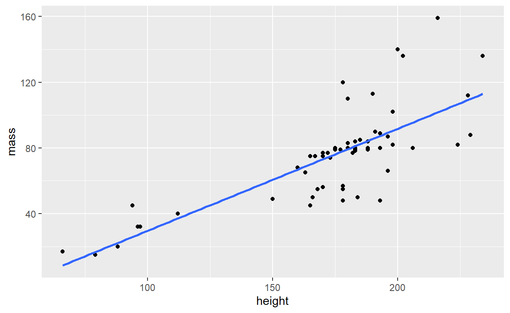
Import data
dplyr has an onboard dataset, starwars
data(starwars)
starwars
# A tibble: 87 x 14
name height mass hair_color skin_color eye_color birth_year sex
<chr> <int> <dbl> <chr> <chr> <chr> <dbl> <chr>
1 Luke~ 172 77 blond fair blue 19 male
2 C-3PO 167 75 <NA> gold yellow 112 none
3 R2-D2 96 32 <NA> white, bl~ red 33 none
4 Dart~ 202 136 none white yellow 41.9 male
5 Leia~ 150 49 brown light brown 19 fema~
6 Owen~ 178 120 brown, gr~ light blue 52 male
7 Beru~ 165 75 brown light blue 47 fema~
8 R5-D4 97 32 <NA> white, red red NA none
9 Bigg~ 183 84 black light brown 24 male
10 Obi-~ 182 77 auburn, w~ fair blue-gray 57 male
# ... with 77 more rows, and 6 more variables: gender <chr>,
# homeworld <chr>, species <chr>, films <list>, vehicles <list>,
# starships <list>Steps to Visualization
Draw the base layer
This feels like, and looks like, you drew an empty box.
starwars %>%
ggplot()

But wait, there’s more….
Map the aesthetics to variables in the dataframe
Still doesn’t look like much. You will initialize the plot scales and labels based on the values of the variables in the dataframe.
starwars %>%
filter(mass < 500) %>%
ggplot(aes(height, mass))
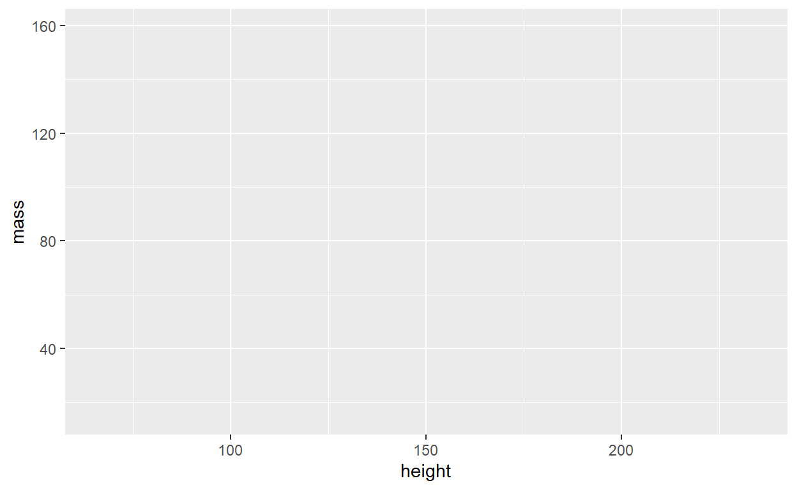
In the above, I subset the data, removing any Star Wars characters weighing more than 500 Kg – dplyr::filter(). Then I initialized the base layer with the height as the x axis and mass as the y axis. ggplot drew the scales for me.
Visualize a layer
Since I have two numeric variables, height and mass, I’ll start with a scatter plot. Scatter plots are generated by the geom_point() function.
starwars %>%
filter(mass < 500) %>%
ggplot(aes(height, mass)) +
geom_point()
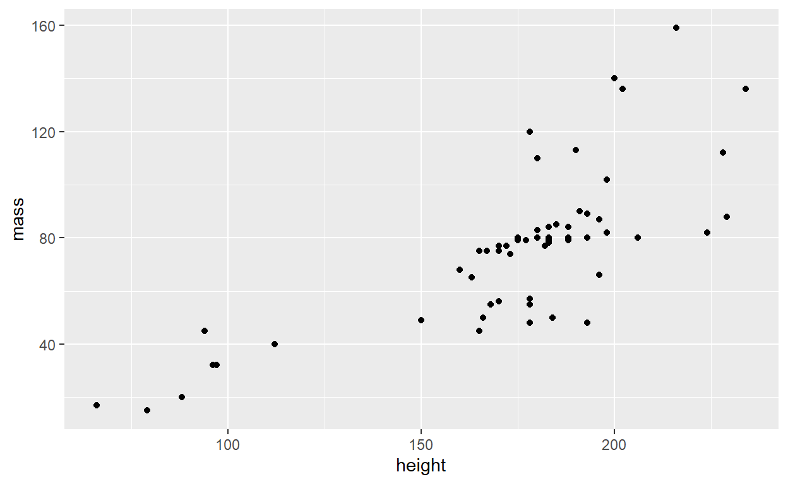
Global v local arguments
So far, the aesthetics are mapped in the aes() function within the initial ggplot function. As such, these values are mapped globally and all layers are affected by this mapping. See the aes() function, above. Arguments can also be mapped locally, within a geom function layer, as as geom_point(aes(height, mass)).
starwars %>%
filter(mass < 500) %>%
ggplot() +
geom_point(aes(height, mass))
Mapping v Setting
Dataframe values can be mapped inside the aesthetic, aes(), to visualize variable dataframe values. Alternatively, data values can be set as an argument outside the aes() function but inside the geom_ function. This is done to affect a visual quality that is manually assigned, as opposed to being derived from variable data values.
Aesthetic arguments include:
- color
- fill
- size
- linetype
- opacity
- shape
- and more see documentation for each geom_
Mapping:
coloris mapped insideaes()function. In this case,color = starwars$gender
starwars %>%
filter(mass < 500) %>%
ggplot() +
# geom_point(mapping = aes(x = height, y = mass, color = gender))
geom_point(aes(height, mass, color = gender))
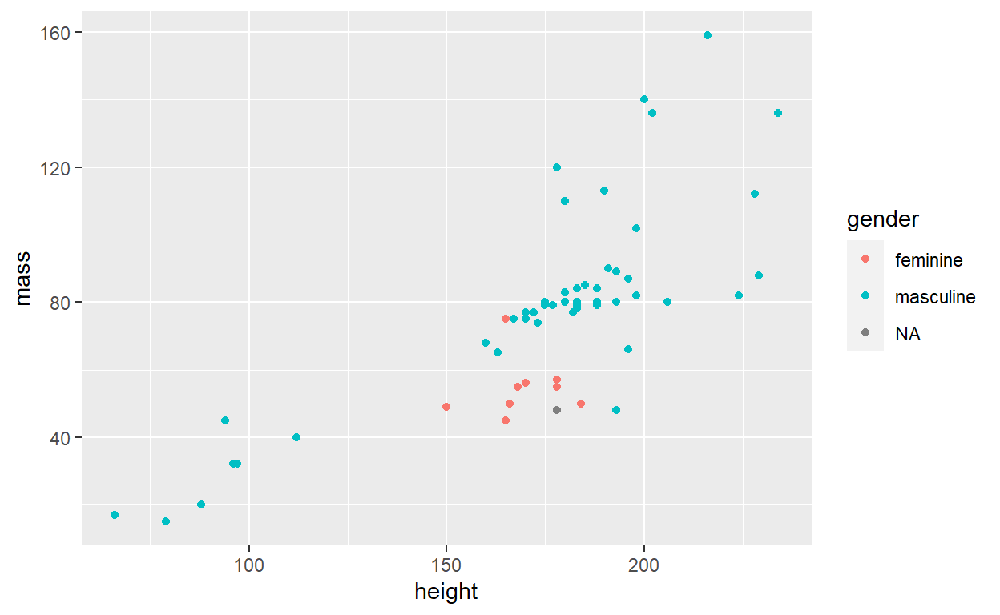
Notice the legend was drawn automatically, above, by mapping an aesthetic
Setting: The
colorargument can be set outside theaes()function, but within thegeom_function. In this case withcolor = "goldenrod"
starwars %>%
filter(mass < 500) %>%
ggplot() +
geom_point(aes(height, mass), color = "goldenrod")
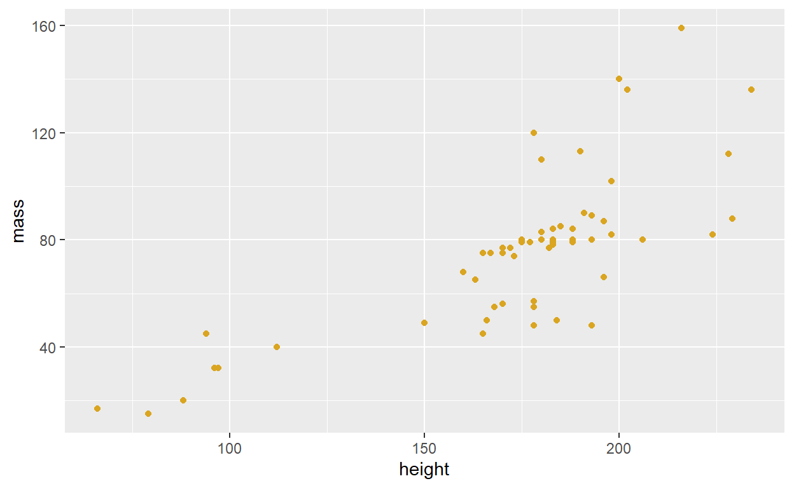
Common geom_ functions
| Type | Geom |
|---|---|
| Bar graph: | geom_bar() geom_col() |
| Histogram: | geom_histogram() |
| Scatter plot: | geom_point() geom_jitter() |
| Line graph: | geom_line() |
| Box plot: | geom_boxplot() |
| Density: | geom_density() geom_violin() |
| Heat map: | geom_heatmap() |
| Mapping: | geom_sf() |
| Regression line: | geom_smooth() |
A list of available geom_ functions, or layers, can be found in the help or on the website: https://ggplot2.tidyverse.org/reference/index.html#section-geoms
Boxplot
starwars %>%
mutate(species = fct_lump_min(species, 2)) %>%
ggplot(aes(species, height)) +
geom_boxplot()

Line graph
babynames::babynames %>%
filter(name == "Watts") %>%
ggplot(aes(year, n)) +
# geom_point() +
geom_line()
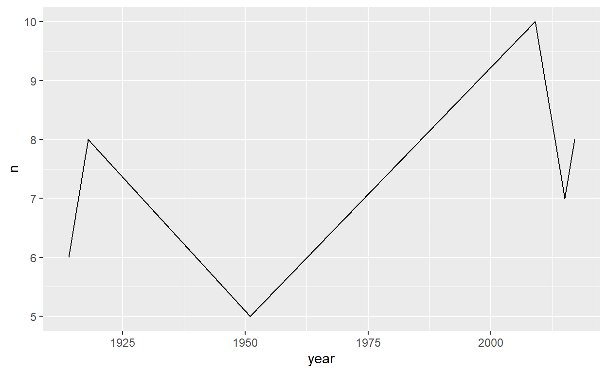
Overplotting
There are two simple approaches to visualizing overplotted data: geom_jitter() and decrease the opacity be setting the alpha = argument.
- Adjust opacity. The
alphaargument within the geom function affects the opacity of the points. In this way, overplotted data will appear as darker points on the plot
starwars %>%
filter(mass < 500) %>%
ggplot() +
geom_point(aes(height, mass), alpha = .3)
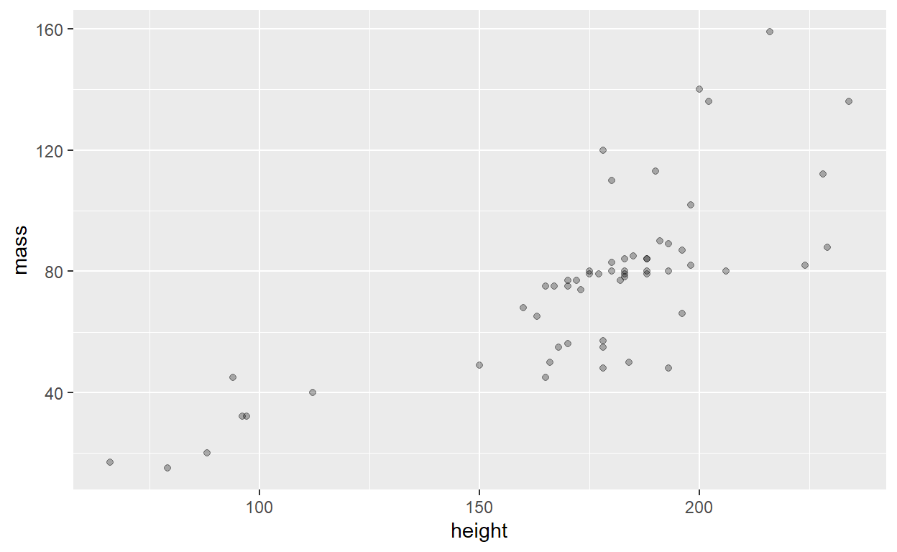
- Jitter the data with
geom_jitter()
geom_jitter will not change the values of the data but it will offset data points, making it easier to perceive the overplotting.
starwars %>%
filter(mass < 500) %>%
ggplot() +
geom_jitter(aes(height, mass))
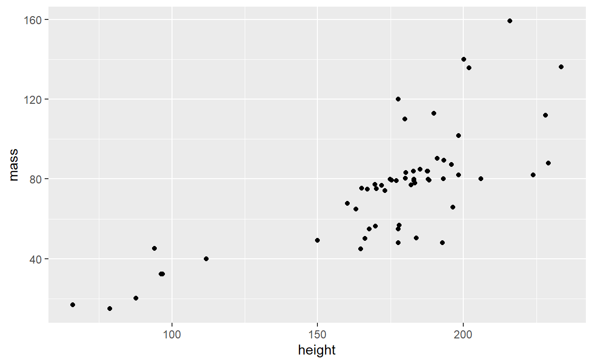
Multiple layers
Each layer, visualized by a geom_ function, can support local arguments and draw from the global settings. Below we use the geom_line() function, followed by the geom_point() function.
babynames %>%
ggplot(aes(year, prop)) +
geom_line(aes(color = sex)) +
geom_point(alpha = 0.4, shape = "cross")
The full code for the above graph can be seen below.
library(babynames)
library(ggplot)
babynames %>%
filter(name == "John" & sex == "M" |
name == "Elizabeth" & sex == "F") %>%
ggplot(aes(year, prop)) +
geom_line(aes(color = sex)) +
geom_point(alpha = 0.4, shape = "cross") +
geom_text(data = . %>% filter(year == 1965), aes(label = name),
nudge_y = .009) +
labs(title = "Name Popularity") +
theme(legend.position = "none")Goal
Recall the goal mentioned in the beginning. We want a scatter plot and a regression line. The regression line is drawn with the geom_smooth() function.
starwars %>%
filter(mass < 500) %>%
ggplot(aes(height, mass)) +
geom_point() +
geom_smooth(method = lm, se = FALSE)
Arrange order
Categorical values are most easily ordered with the forcats library. Part of the Tidyverse, the forcats package is used to transform string data as a factor data type. Data types in R can be simple distinctions useful in efficient computation, such as calculating numeric outcomes versus manipulating character data (i.e. string or text data). R data types are rich and sometimes complex. Staying simple, text data consisting of categories, may be efficiently handled as a factor data type. For example, eye colors can be categorized. Brown, blue, and green are nominal categorical values for the factor variable eye_color. Among other things, treating eye_color as a factor data type enables visually ordering categorical values by frequency.
Before arranging order
msleep %>%
ggplot(aes(vore)) +
geom_bar()
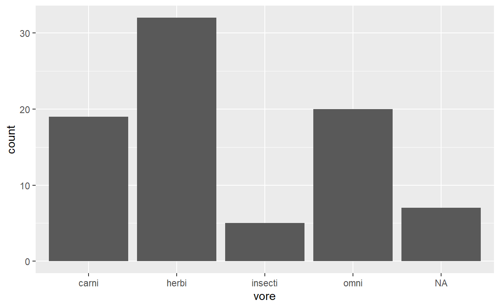
Arranging order with forcats
Change the order of the bars by the frequency of observations using forcats::fct_infreq()
msleep %>%
ggplot(aes(fct_infreq(vore))) +
geom_bar()
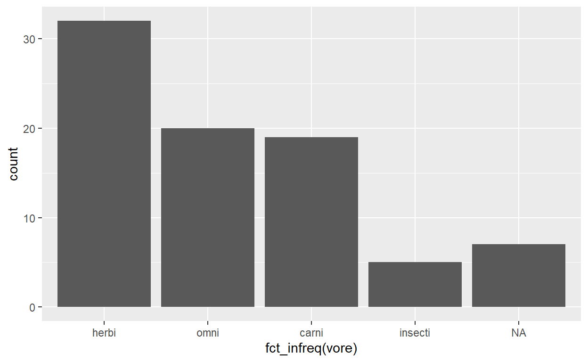
Notice below, we use the fill = argument to set the color of an individual bar. In the scatter plot examples, above, we used the color = argument. In many geoms_ you can use both color and fill arguments. How do these arguments differ? Where can you look to find out more about fill and color?
starwars %>%
ggplot(aes(fct_rev(fct_infreq(eye_color)))) +
geom_bar(fill = "grey70") +
geom_bar(data = starwars %>% filter(eye_color == "orange"), fill = "darkorange") +
coord_flip()
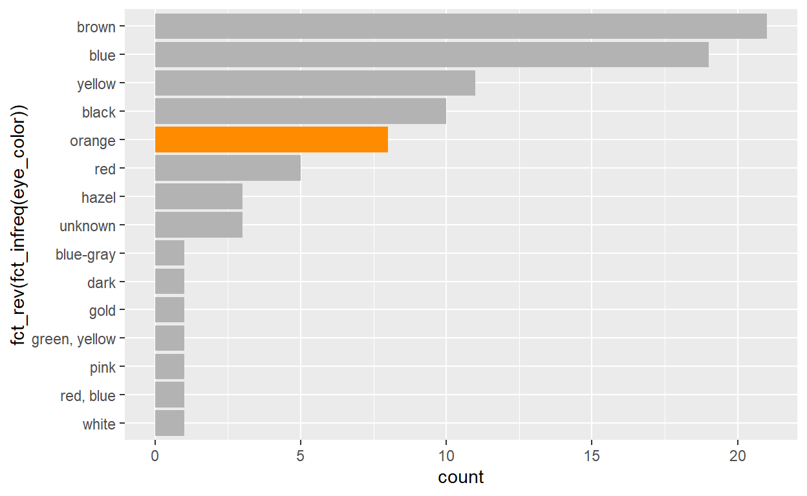
Facet wrap
Faceting is great way to make subplots of the same dataframe. See both facet_wrap() and facet_grid()
mpg %>%
ggplot(aes(displ, hwy)) +
geom_point() +
facet_wrap(~ class)
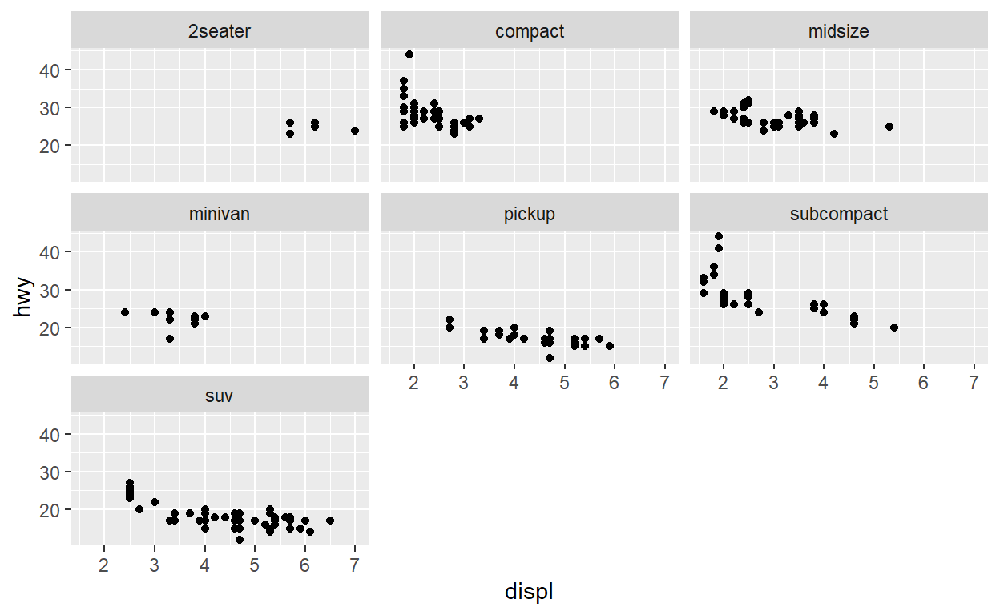
Scales
Scales are used to affect the visual qualities of the data. I’ll introduce scales to visualize discrete categories by associating each discrete value with a specific color. Read more about scales.
Viridis scales apply color palettes to continuous, discrete, or binned data. For discrete data we can use the scale_fill_viridis_d() function.
By using one the
scale_fill_functions, we are able to affect the variable values associated in thefill = conservationargument.
msleep %>%
ggplot(aes(fct_infreq(vore), sleep_total)) +
geom_col(aes(fill = conservation)) +
scale_fill_viridis_d(na.value = "grey80")
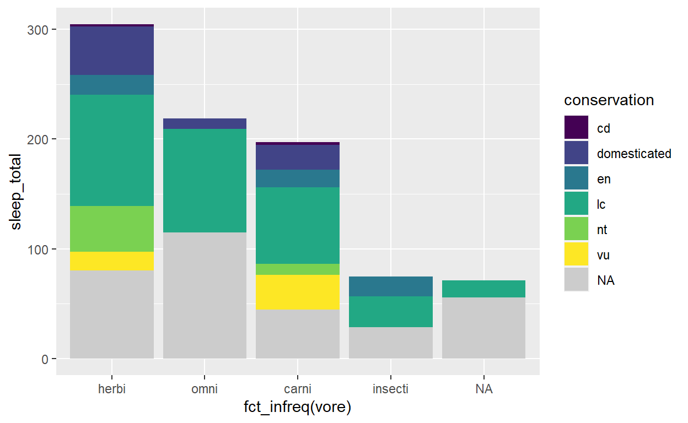
The color brewer palette is similar but has a wider array of palettes to choose from. Below we use scale_fill_brewer() and a default qualitative color palette by setting the type = argument to qual (for qualitative). Alternatively, or additionally, we could assign a palette = argument to choose a particular ColorBrewer palette, such as choosing the “Dark2” palette with the argument palette = "Dark2"
msleep %>%
ggplot(aes(fct_infreq(vore), sleep_total)) +
geom_col(aes(fill = conservation)) +
scale_fill_brewer(type = "qual", na.value = "grey80")
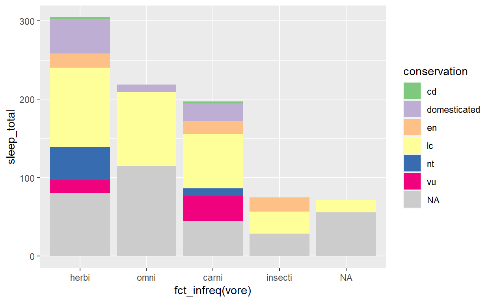
Sometimes a manual scale is preferred. Below we use scale_fill_manual() to associate a defined set of color names with my fill = conservation argument
mycolors <- c("firebrick", "forestgreen", "navy", "darkorange",
"goldenrod", "sienna")
msleep %>%
ggplot(aes(fct_infreq(vore), sleep_total)) +
geom_col(aes(fill = conservation)) +
scale_fill_manual(values = mycolors, na.value = "grey80")
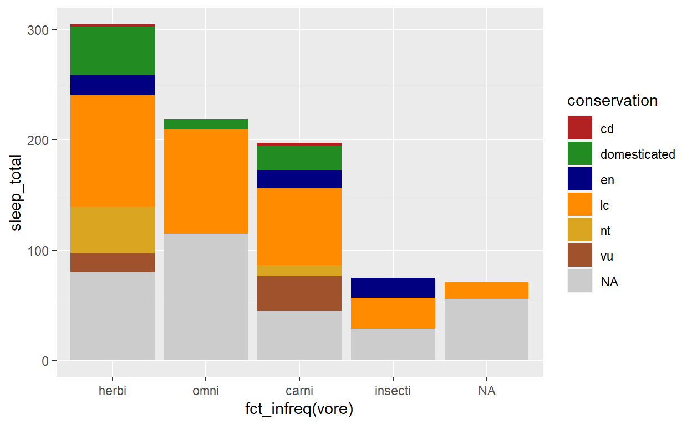
To find available colors: Google search “R color names”, or specific to ColorBrewer….
#display.brewer.pal(7,"Dark2")
RColorBrewer::display.brewer.all()

Scales are used to manipulate the visual properties of the data. Beyond using scales to modify colors, another example is logarithmic scales to account for data skew. In this way you can clarify the data pattern. For example, using the ChickWeight dataset, we visualize the weights of the chicks over time. Hint: You can visualize the data skew with a histogram, geom_histogram().
data("ChickWeight")
ChickWeight %>%
ggplot(aes(Time, weight, color = Diet)) +
geom_line(aes(group = Chick))
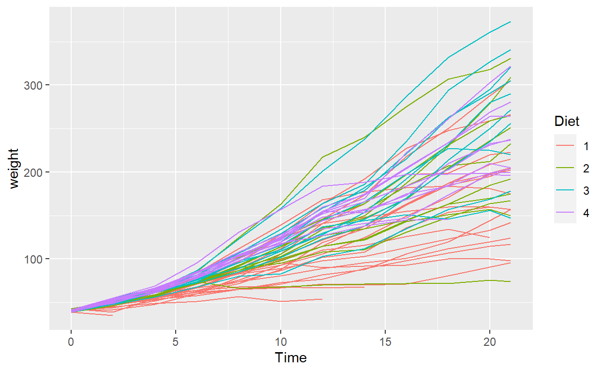
Using scale_y_log10 we can alter the scale to highlight a more understandable data pattern
chicken_plot <- ChickWeight %>%
ggplot(aes(Time, weight, color = Diet)) +
geom_line(aes(group = Chick)) +
scale_y_log10()
chicken_plot
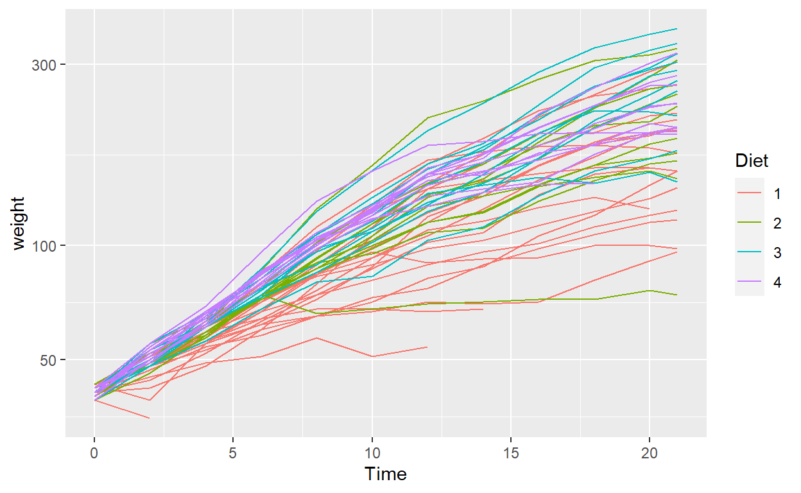
Labels
The labs() function is specialized scales function, used to apply labels. For example, use the labs() function to add a title, subtitle, legend title, modify axis labels, and set a caption. See more on scales.
plot_sleep <- msleep %>%
mutate(vore = case_when(
vore == "herbi" ~ "Herbivore",
vore == "omni" ~ "Omnivore",
vore == "carni" ~ "Carnivore",
vore == "insecti" ~ "Insectivore"
)) %>%
ggplot(aes(fct_infreq(vore), sleep_total)) +
geom_col(aes(fill = conservation)) +
scale_fill_brewer(type = "qual", na.value = "grey80") +
labs(title = "Animal sleep times",
subtitle = "A practice dataset",
fill = "Conservation\nType",
x = "",
y = "Sleep time in hours",
caption = "Source: ggplot::msleep")
plot_sleep

Themes
Themes are used to manipulate the stylistic characteristics of the non-data components of your plot, such as font faces, text sizes, and grid lines. ProTip: quickly manipulate a single plot with preset themes such as theme_dark, or use a specialized theme extension such as theme_ipsum from the hrbrthemes package.
https://ggplot2.tidyverse.org/reference/ggtheme.html
- for example…
theme_dark(),theme_light(),theme_classic()
- for example…
https://yutannihilation.github.io/allYourFigureAreBelongToUs/ggthemes/
See more on themes
Example themes

theme_dark()
plot_sleep +
theme_dark()
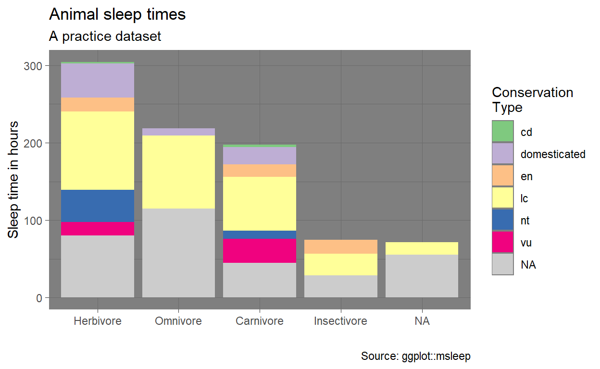
theme_classic
plot_sleep +
theme_classic()
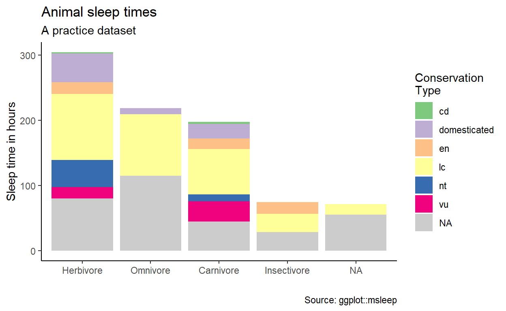
hbrthemes
https://cinc.rud.is/web/packages/hrbrthemes/
plot_sleep +
hrbrthemes::theme_ipsum(grid = "Y") +
hrbrthemes::scale_fill_ipsum(na.value = "grey80",
labels = c("Critical", "Domesticated",
"Endangered", "Least Concern",
"Threatened", "Vulnerable")) +
theme(plot.title.position = "plot")
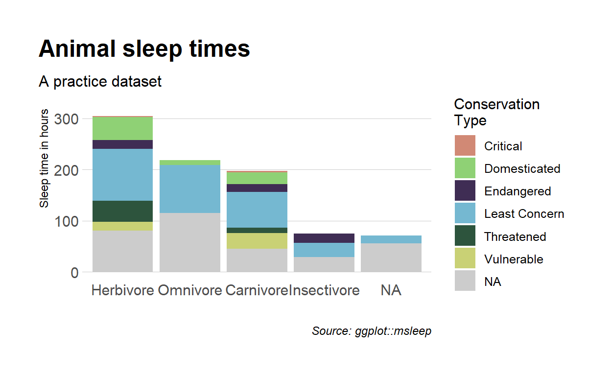
Combine plots
The patchwork package makes it “ridiculously simple to combine separate ggplot objects into the same graphic.” The /will separate plots vertically. The | will separate plots horizontally. See more about patchwork
Try also: (plot_sleep | chicken_plot)
# install.packages("devtools")
# devtools::install_github("thomasp85/patchwork")
# https://patchwork.data-imaginist.com/
library(patchwork)
(plot_sleep / chicken_plot)
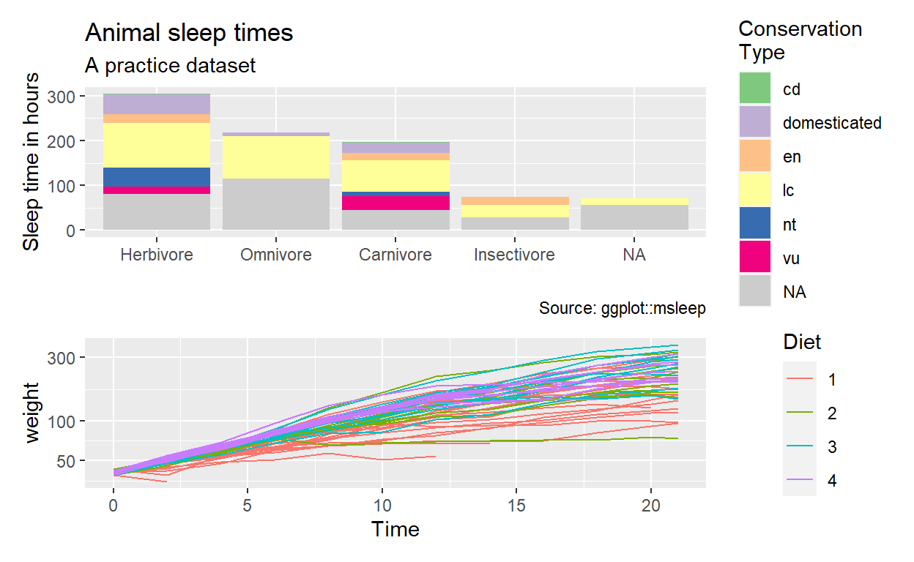
Interactive plots
Use the ggplotly function will transform your static ggplot object into an interactive plot. This interactive plot can be used in dashboards and web presentations.
See more at the Plotly ggplot2 Library page, and the Interactive web-based data visualization with R, plotly, and shiny book.
Annimate plots
Use the gganimate package to bring your plot to life through the wonders of animation. Learn more at the resource page for gganimate
For Example:

Attribution
Adapted in whole or in part based on the Visualize Data with ggplot2 slides by Garrett Grolemund at RStudio. CC BY Garrett Grolemund, RStudio